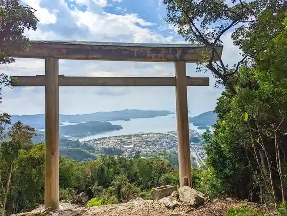
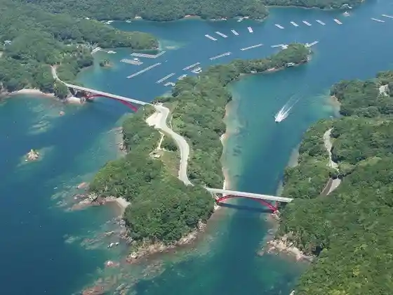
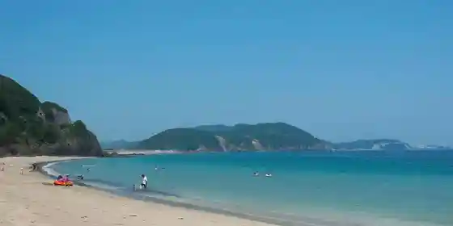
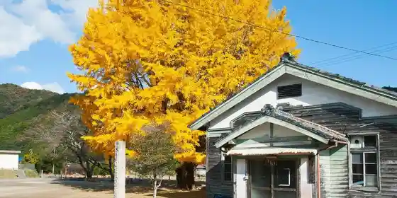

Gogatokoro Ura Asamayama
Minamiise, Mie · 0599-66-1717 · Official / source link

Aso Ura Oyako Bridge
Minamiise, Mie · 0599-66-1717 · Official / source link

Onigashiro (Minamiise)
Minamiise, Mie · 0599-66-1717 · Official / source link
Ta So Shirahama
Minamiise, Mie · 0599-66-1717 · Official / source link

Kawauchi no Oicho (Wakakusa Sono)
Minamiise, Mie · 0599-66-1717 · Official / source link

Sei Izumi Tera (Fujidana)
Minamiise, Mie · 0599-66-0508 · Official / source link
Aisu Village
Minamiise, Mie · 0599-66-2440 · Official / source link
Minamiise Cherry Blossoms (Michikata)
Minamiise, Mie · 0599-66-1717 · Official / source link
Minamiise Cherry Blossoms (Kawauchi Kawa)
Minamiise, Mie · 0599-66-1717 · Official / source link
Minamiise Cherry Blossoms (Ogata Kamado)
Minamiise, Mie · 0599-66-1717 · Official / source link
O Fuchi Shirataki
Minamiise, Mie · 0599-66-1717 · Official / source link
Tachibana Lookout no Tenku Buranko (U Kura Enchi)
Minamiise, Mie · 0599-66-1717 · Official / source link
Kawa Village Zuiken Park
Minamiise, Mie · 0599-66-1717 · Official / source link
Kappa Hashi (Iseji Hashi) no Ajisai
Minamiise, Mie · 0599-66-1717 · Official / source link
Nankai Tembo Park (Nankai Lookout)
Minamiise, Mie · 0599-66-1717 · Official / source link
Kawa Village Zuiken Park no Kawazu Sakura
Minamiise, Mie · 0599-66-1717 · Official / source link
Kyu Ho Hara Shogakko no Oicho
Minamiise, Mie · 0599-66-1717 · Official / source link
Nirahama Lookout
Minamiise, Mie · 0599-66-1717 · Official / source link
Naka no Iso Lookout
Minamiise, Mie · 0599-66-1717 · Official / source link
Setsu Hara Shirataki
Minamiise, Mie · 0599-66-1717 · Official / source link
Murayama Fudo Falls (Asahi Taki)
Minamiise, Mie · 0599-66-1717 · Official / source link
Izumi no Gyoi Kizakura
Minamiise, Mie · 0599-66-1717 · Official / source link
Kawauchi Fudo Falls
Minamiise, Mie · 0599-66-1717 · Official / source link
Shin Kuwa Kamado Fudo Falls
Minamiise, Mie · 0599-66-1717 · Official / source link
Ise Michi Shinchi Tani Nanatsu Taki
Minamiise, Mie · 0599-66-1717 · Official / source link
Togu Fudo Falls
Minamiise, Mie · 0599-66-1717 · Official / source link
Kowa Ura Fudo Falls
Minamiise, Mie · 0599-66-1717 · Official / source link
Fu Shima Park Nanto
Minamiise, Mie · 0596-77-1555 · Official / source link
Yahashira Shrine (Kowa Ura)
Minamiise, Mie · 0599-66-1717 · Official / source link
Aisu no Kan
Minamiise, Mie · 0599-66-2440 · Official / source link
Hamabo Gunsei Chi (Minamiise Nai Se)
Minamiise, Mie · 0599-66-1717 · Official / source link
Ken Ejima Lookout (U Kura Enchi)
Minamiise, Mie · 0599-66-1717 · Official / source link
Tachibana Lookout (U Kura Enchi)
Minamiise, Mie · 0599-66-1717 · Official / source link
Kasaragi Lookout (U Kura Enchi)
Minamiise, Mie · 0599-66-1717 · Official / source link
Kamado Ho no Shio Seien Tokoro
Minamiise, Mie · Official / source link
U Kura Enchi (Akebo no Lookout Ken Ejima Lookout Kasaragi Lookout Tachibana Lookout)
Minamiise, Mie · 0599-66-1717 · Official / source link
Na Ya Ura Guraundo no Kawazu Sakura
Minamiise, Mie · 0599-66-1717 · Official / source link
Akebo no Lookout (U Kura Enchi)
Minamiise, Mie · 0599-66-1717 · Official / source link
U Kura Enchi (Hato no Irie)
Minamiise, Mie · 0599-66-1717 · Official / source link
Ise Gendai Art Museum
Minamiise, Mie · 0599-66-1138 · Official / source link
Marukinmaru
Minamiise, Mie · 090-7850-4064 · Official / source link
Fu Shima Park Nanto
Minamiise, Mie · 0596-77-1555 · Official / source link
(Kabu) Tsuchi Miki Farm
Minamiise, Mie · 0599-66-1201 · Official / source link
TASO SUNRISE VILLAGE
Minamiise, Mie · Official / source link
Nanto Park
Minamiise, Mie · Official / source link
Basan
Minamiise, Mie · 0599-66-1717 · Official / source link
Taichi In
Minamiise, Mie · 0599-66-1717 · Official / source link
Nagoyaka Furawa Garden (Ita Fuchi Farm)
Minamiise, Mie · Official / source link
Togu Shiryo Hozon Kan
Minamiise, Mie · 0596-72-0701 · Official / source link
Nankai Tembo Plaza no Zekkei Buranko
Minamiise, Mie · 0599-66-1717 · Official / source link
Hachi Negi Yama
Minamiise, Mie · 0599-66-1717 · Official / source link
Kyo Michi Yama
Minamiise, Mie · 0599-66-1717 · Official / source link
Kokudo 260 Gosen Cherry Blossoms
Minamiise, Mie · 0599-66-1717 · Official / source link
Tanahashi Kamado Fudo Falls
Minamiise, Mie · 0599-66-1717 · Official / source link
Kokudo 260 Go no Keikan
Minamiise, Mie · 0599-66-1717 · Official / source link
Tsurugi Toge
Minamiise, Mie · 0599-66-1717 · Official / source link
Yamatohime Inochi Koshikake Iwa
Minamiise, Mie · 0599-66-1717 · Official / source link
Nomi Saka no Chiso Shukyoku
Minamiise, Mie · 0599-66-1717 · Official / source link
Gogatokoro Joshi
Minamiise, Mie · 0599-66-2440 · Official / source link
Dai Hachi Umi Harumaru
Minamiise, Mie · 0599-66-0372 · Official / source link
Tsuri Park Sasuke Ya
Minamiise, Mie · 090-1620-9457 · Official / source link
Sakaguchi Maru
Minamiise, Mie · 090-8956-6239 · Official / source link
Kuro Chan Tosen
Minamiise, Mie · 080-1552-9696 · Official / source link
Kubo Tosen
Minamiise, Mie · 090-1098-4636 · Official / source link
Umi Sakuramaru
Minamiise, Mie · 090-5853-5908 · Official / source link
Ten Yoshiya
Minamiise, Mie · Official / source link
Saniikosutokayakkusu
Minamiise, Mie · 0599-66-1919 · Official / source link
Tsuru Workshop
Minamiise, Mie · 090-4238-0832 · Official / source link
Koei Maru
Minamiise, Mie · 090-7435-3666 · Official / source link
Tsuribune Nagisa Maru
Minamiise, Mie · 0599-64-2202 · Official / source link
HDA Ho Za Ura Daibinguashisuto
Minamiise, Mie · 0596-76-0530 · Official / source link
Onigashiro (Minamiise)
Minamiise, Mie · 0599-66-1501 · Official / source link
TASO FOREST CAMP
Minamiise, Mie · 0599-77-6208 · Official / source link
Ta So Shirahama Beach
Minamiise, Mie · 0599-77-6208 · Official / source link
Gogatokoro Wan Botosabisu
Minamiise, Mie · 0599-66-1652 · Official / source link
Shishi Shima no Juso
Minamiise, Mie · 0599-66-1501 · Official / source link
Kowa Ura Mirai Club
Minamiise, Mie · 0596-78-0338 · Official / source link
Hotaru Momiji En
Minamiise, Mie · 0599-66-1501 · Official / source link